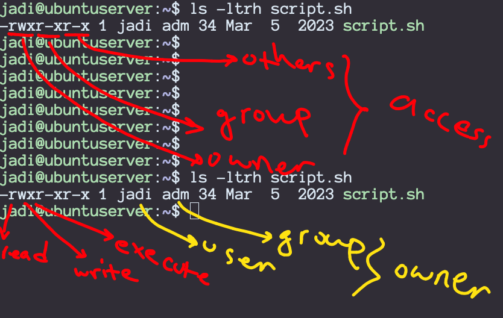

104.5 مدیریت مجوزها و مالکیت فایل
وزن: 3
نامزدها باید بتوانند دسترسی به فایل را از طریق استفاده مناسب از مجوزها و مالکیت ها کنترل کنند.
حوزه های دانش کلیدی
- مجوزهای دسترسی به فایل های معمولی و خاص و همچنین دایرکتوری (پوشه) ها را مدیریت کنید.
- برای حفظ امنیت از حالت های دسترسی مانند suid، sgid و the sticky bit استفاده کنید.
- نحوه تغییر ماسک ایجاد فایل را بدانید.
-
از فیلد گروه برای اعطای دسترسی به فایل به اعضای گروه استفاده کنید.
-
chmod
- Umask
- چاشنی
- chgrp
کاربران و گروه ها
یک سیستم لینوکس می تواند کاربران و گروه های زیادی داشته باشد. می توانید با یک کاربر وارد شوید و از دستور su برای تغییر به گروه دیگر استفاده کنید. هر کاربر به یک گروه اصلی تعلق دارد و می تواند عضو گروه های دیگر نیز باشد.
برای بررسی کاربر و گروه خود از دستورات whoami، groups و id استفاده کنید.
- $ whoami
jadi
- $ groups
jadi adm cdrom sudo dip plugdev netdev lpadmin sambashare debian-tor
- $ id
uid=1000(jadi) gid=1000(jadi) groups=1000(jadi),4(adm),24(cdrom),27(sudo),30(dip),46(plugdev),102(netdev),108(lpadmin),124(sambashare),125(debian-tor)
- $ su root -
Password:
- # id
uid=0(root) gid=0(root) groups=0(root)
- # exit
exit
- $ whoami
jadi
همانطور که می بینید id اطلاعات کاربر و گروه را نشان می دهد.
توجه داشته باشید که 0 UID و 0 GID متعلق به کاربر root و گروه root هستند.
اینها در فایل های /etc/passwd و /etc/group ذخیره می شوند.
$ cat /etc/group | grep adm
adm:x:4:syslog,jadi
lpadmin:x:108:jadi
مالکیت و مجوزهای دسترسی به فایل (File Permissions)
لینوکس از سه لایه دسترسی/مجوز برای هر فایل یا دایرکتوری (پوشه) استفاده می کند: کاربر، گروه و دیگران.
هر فایل متعلق به یک کاربر و یک گروه است و این کاربر و اعضای آن گروه دسترسی های خواندن/نوشتن/اجرای خاصی روی آن خواهند داشت. نگاهی بیندازید:
$ ls -ltrh script.sh
-rwxr-xr-x 1 jadi adm 34 Mar 5 2023 script.sh
در مثال بالا، jadi مالک فایل است. این فایل متعلق به گروه adm است و مالک (jadi در اینجا) مجوزهای read، write (شامل حذف و ویرایش) و execute (خواندن محتوای دایرکتوری (پوشه)) روی فایل را دارد در حالی که اعضای ____INLINE_8 فقط به &.

در بسیاری از توزیع ها، زمانی که کاربر ایجاد می کنید، سیستم گروهی با همین نام ایجاد می کند و فایل های آن کاربر را به آن گروه اختصاص می دهد.
جدول زیر اطلاعات بیشتری را در مورد قسمت اول دستور ls -l نشان می دهد:
| موقعیت | معنی |
|---|---|
| 1 | این مدخل چیست. خط تیره (-) برای فایل های معمولی، 'l' برای پیوندها و 'd' برای فهرست |
| 2،3،4 | خواندن، نوشتن و اجرای دسترسی برای مالک |
| 5،6،7 | خواندن، نوشتن و اجرای دسترسی برای اعضای گروه |
| 8,9,10 | خواندن، نوشتن و اجرای دسترسی برای سایر کاربران |
| 11 | نشان داده شده است که آیا روش های دسترسی دیگر (مانند SELinux) برای این فایل اعمال می شود - بخشی از آزمون LPIC 101 نیست |
بیایید یک مثال دیگر را بررسی کنیم.
$ ls -l /sbin/fdisk
-rwxr-xr-x 1 root root 267176 Oct 15 18:58 /sbin/fdisk
میتوانیم ببینیم که fdisk میتواند توسط مالک آن (root) خوانده شود، نوشته شود و اجرا شود. سایر کاربران (حتی اگر به گروه root تعلق داشته باشند) فقط می توانند آن را بخوانند و اجرا کنند.
اگرچه کاربران غیر روت می توانند fdisk را اجرا کنند، این برنامه اگر ببیند که یک کاربر غیر ریشه آن را اجرا می کند کار زیادی انجام نمی دهد.
بیایید به مثال دیگری نگاه کنیم:
$ ls -l /home/
total 12
drwxr-xr-x 160 jadi jadi 12288 Feb 7 11:44 jadi
اولین کاراکتر یک d است، بنابراین این یک فهرست است. مالک (jadi) دسترسی خواندن، نوشتن و اجرا دارد اما سایر اعضای jadi گروه و سایر فقط دسترسی خواندن و اجرا در این فهرست دارند.
اجرای (x نویسه) به این معنی است که آنها می توانند فایل های داخل آن را ببینند، اگر dir x ندارد نگاهی بیندازید:
(with root user)
$ tree /tmp/FOO
FOO
├── Bar1
└── Bar2
$ ls -ld /tmp/FOO/
drw-r--r--. 2 jadi jadi 80 Mar 23 19:32 FOO/
(With other user)
$ ls -l FOO/
ls: cannot access 'FOO/Bar2': Permission denied
ls: cannot access 'FOO/Bar1': Permission denied
total 0
-????????? ? ? ? ? ? Bar1
-????????? ? ? ? ? ? Bar2
تغییر مجوزها
با استفاده از دستور chmod امکان تغییر مجوزها در فایل ها و دایرکتوری (پوشه) ها وجود دارد. دو راه برای گفتن این دستور وجود دارد که می خواهید انجام دهید:
- با استفاده از کدهای هشتگانه (پایه 8).
- استفاده از کدهای کوتاه
هنگام استفاده از کدهای اکتال، باید یک عدد اکتال ایجاد کنید تا به chmod بگویید چه کاری می خواهید انجام دهید. در این روش، 0 به معنای عدم دسترسی، 1 به معنای اجرا، 2 به معنای نوشتن و 4 به معنای خواندن است. بنابراین اگر میخواهید read+execute بدهید، باید 4+1 را بدهید که 5 است. جدول زیر هر ترکیب ممکن را نشان می دهد:
| نمادین | اکتال |
|---|---|
| rwx | 7 |
| rw- | 6 |
| r-x | 5 |
| r-- | 4 |
| -wx | 3 |
| -w- | 2 |
| --x | 1 |
| --- | 0 |
بنابراین اگر میخواهید rwx را به مالک، rx را به گروه و فقط x را به دیگران بدهید، باید از 751 استفاده کنید:
$ ls -ltrh myfile
-rw-rw-r-- 1 jadi jadi 0 Feb 8 21:01 myfile
$ chmod 751 myfile
$ ls -ltrh myfile
-rwxr-x--x 1 jadi jadi 0 Feb 8 21:01 myfile
این ممکن است دشوار به نظر برسد، اما برخی از ترکیبهای رایج مانند 755 برای فایلهای اجرایی عمومی یا 600 برای فایلهای شخصی وجود دارد.
یک روش آسانتر نیز وجود دارد. در این روش u به معنای کاربر، g به معنای گروه و o به معنای دیگران است. میتوانید +x را برای دادن مجوز اجرا، +r را برای اجازه خواندن و +w را برای اجازه نوشتن اضافه کنید. به عنوان مثال u+x اجازه اجرا را به کاربر می دهد. اگر میخواهید مجوزی را حذف کنید، از علامت - استفاده کنید. به عنوان مثال g-r برای جلوگیری از group اعضای read______ کردن فایل.
$ ls -ltrh myfile
-rwxr-x--x 1 jadi jadi 0 Feb 8 21:01 myfile
$ chmod u-x myfile
$ ls -ltrh myfile
-rw-r-x--x 1 jadi jadi 0 Feb 8 21:01 myfile
$ chmod +x myfile
$ chmod uo+xr myfile
$ ls -ltrh myfile
-rwxr-xr-x 1 jadi jadi 0 Feb 8 21:01 myfile
یکی از کلیدهای بسیار رایج در chmod، -R برای chmod بازگشتی روی فایلها است. این به read مجوز همه فایل های داخل /tmp/ را به هر کاربری می دهد:
# chmod -R o+r /tmp
تغییر مالک و گروه ها
اگر نیاز به تغییر مالکیت یا گروه یک فایل یا دایرکتوری (پوشه) دارید، از دستور chown استفاده کنید:
$ ls -ltrh newfile
-rw-rw-r-- 1 jadi jadi 0 Feb 8 21:38 newfile
$ chown root:root newfile
chown: changing ownership of ‘newfile’: Operation not permitted
$ sudo chown root:root newfile
[sudo] password for jadi:
$ ls -ltrh newfile
-rw-rw-r-- 1 root root 0 Feb 8 21:38 newfile
یک سوئیچ رایج به صورت بازگشتی -R به chown است.
در صورت نیاز به تغییر گروه فقط می توانید از دستور chgrp استفاده کنید:
$ sudo chgrp postgres newfile
$ ls -ltrh newfile
-rw-rw-r-- 1 root postgres 0 Feb 8 21:38 newfile
از طریق دستور usermod می توان گروه های بیشتری را به کاربر اختصاص داد:
$ sudo usermod -aG sudo jadi # will add jadi to the sudo group
از آنجایی که کاربران میتوانند عضو گروههای زیادی باشند، ممکن است لازم باشد گروه پیشفرض خود را هنگام ایجاد فایل تغییر دهند. برای انجام این کار، گروه ها را با دستور groups بررسی کنید و پیش فرض را با newgrp تنظیم کنید:
$ touch newfile
$ ls -ltrh newfile
-rw------- 1 jadi jadi 0 Feb 8 21:53 newfile
$ groups
jadi adm cdrom sudo dip plugdev netdev lpadmin sambashare debian-tor
$ newgrp adm
$ touch newerfile
$ ls -ltrh new*
-rw------- 1 jadi jadi 0 Feb 8 21:53 newfile
-rw------- 1 jadi adm 0 Feb 8 21:54 newerfile
حالت های دسترسی
یک سوال از شما: اگر دسترسی نوشتن به /etc/passwd یا /etc/shadow نداریم، چگونه میتوانیم رمز عبور خود را تغییر دهیم؟
معمولاً وقتی برنامه ای را اجرا می کنید، با سطح دسترسی your اجرا می شود. اما اگر نیاز به اجرای برنامه ای با سطح دسترسی بالاتر داشته باشید چه اتفاقی می افتد؟ می گویند برای انجام تغییرات در فایل های رمز عبور؟ برای این لینوکس دو بیت ویژه برای هر فایل تنظیم می کند. suid (تنظیم شناسه کاربر) و sgid (تنظیم شناسه گروه). اگر این بیت ها روی یک فایل تنظیم شوند، آن فایل با دسترسی مالک (یا گروه) فایل اجرا می شود و نه کاربری که آن را اجرا می کند.
$ ls -ltrh /usr/bin/passwd
-rwsr-xr-x 1 root root 50K Jul 18 2014 /usr/bin/passwd
لطفاً به s در بیت اجرایی برای مجوزهای کاربر و همچنین برای گروه توجه کنید؟ این بدان معناست که وقتی هر کاربری این برنامه را اجرا می کند، به جای شناسه آن کاربر، با مالک سطح دسترسی فایل (که root است) اجرا می شود.
می توان suid و sgid را با استفاده از chmod و +s یا -s به جای x تنظیم/غیر تنظیم کرد.
در حالی که ما در این مورد هستیم، اجازه دهید شما را با آخرین بیت ویژه آشنا کنم. به آن sticky bit می گویند و در صورت تنظیم، فایل را در برابر حذف مقاوم می کند. اگر بیت چسبنده تنظیم شده باشد، فقط صاحب فایل میتواند آن را حذف کند، حتی اگر دیگران دسترسی نوشتن به آن داشته باشند. این برای مکان هایی مانند /tmp مفید است (همه دسترسی نوشتن به دایرکتوری (پوشه) /tmp دارند اما ما نمی خواهیم دیگران فایل های ما را حذف کنند).
بیت چسبنده با t شناسایی می شود و در آخرین بیت از یک ls -l نشان داده می شود:
$ ls -dl /tmp
drwxrwxrwt 13 root root 77824 Feb 8 21:27 /tmp
همانطور که می بینید بیت چسبنده تنظیم شده است و اگرچه همه کاربران در این دایرکتوری (پوشه) دسترسی نوشتن دارند، نمی توانند فایل های یکدیگر را حذف کنند.
اجازه میدهد نحوه تنظیم این حالتهای دسترسی را مرور کنیم:
| حالت دسترسی | هشتی | نمادین |
|---|---|---|
| suid | 4000 | u+s |
| sgid | 2000 | g+s |
| چسبنده | 1000 | +t |
راهنما در یک دایرکتوری (پوشه)، هر فایل جدیدی را در آن دایرکتوری (پوشه) مجبور می کند که راهنمای خود دایرکتوری (پوشه) را داشته باشد.
ماسک
یک سوال پیچیده دیگر: مجوزهای یک فایل جدید ایجاد شده چیست؟ اگر فایلی که وجود ندارد touch باشد، چه اتفاقی میافتد؟ مجوزهای آن چه خواهد بود؟ این توسط umask تنظیم شده است. این دستور به سیستم می گوید که چه مجوزهایی (علاوه بر اجرا) **نباید به ** فایل های جدید داده شود. به عبارت دیگر، تصور کنید که همه فایلهای جدید دارای مجوز هشتگانه 666 باشند (نوشتن + خواندن برای کاربر، گروه و دیگران)، بنابراین یک ماسک از 0002 (بله! 4 رقم) 2 (نوشتن) را برای دیگران حذف میکند (666-0002=664):
$ umask
0002
اگر بخواهیم umask را تغییر دهیم، می توان با همان دستور این کار را انجام داد:
$ umask
0002
$ touch newfile
$ ls -ltrh newfile
-rw-rw-r-- 1 jadi jadi 0 Feb 8 21:38 newfile
$ mkdir newdir
$ ls -ltrhd newdir
drwxrwxr-x 2 jadi jadi 4.0K Feb 8 21:38 newdir
$ umask u=rw,g=,o=
$ touch newerfile
$ ls -l newerfile
-rw------- 1 jadi jadi 0 Feb 8 21:41 newerfile
$ umask
0177
توجه داشته باشید که چگونه از
u=rw,g=,o=استفاده کردم تا بهumaskیاchmodبگویم دقیقاً چه چیزی از آن میخواستم.